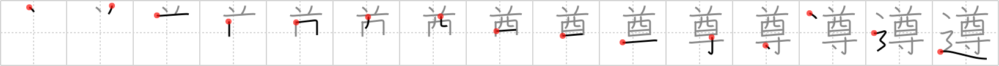

遵
← →
abide by

Reading:
On-Yomi: ジュン
Koohii stories:
1) [Weber] 1-3-2007(223): You must abide by the revered rules of the road! No devil's brew and stay glued to your lane in the road!
2) [furrykef] 9-7-2008(97): Even the most revered person must still abide by the rules of the road – no exceptions are granted to anyone.
3) [rtkrtk] 18-3-2008(21): The revered sins of horniness, whiskey, and sniffing glue must be discarded if you are to abide by the righteous, but difficult, road.
4) [chibimizuno] 16-5-2009(13): The revered chieftain says to abide by his rules or hit the road!
5) [richcoop] 17-7-2009(4): Abide by the rules of the REVERED one as you make your pilgrimage on the ROAD.